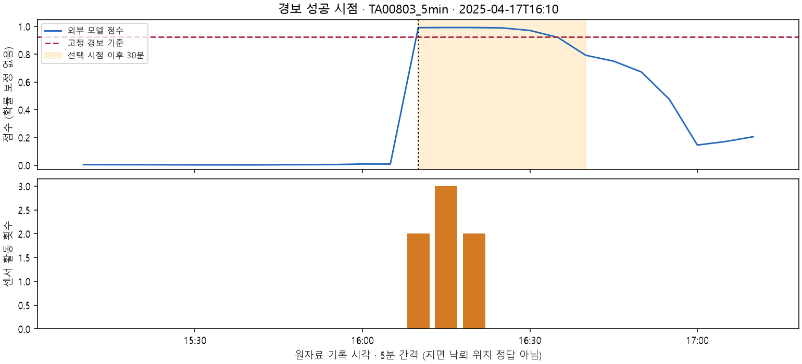
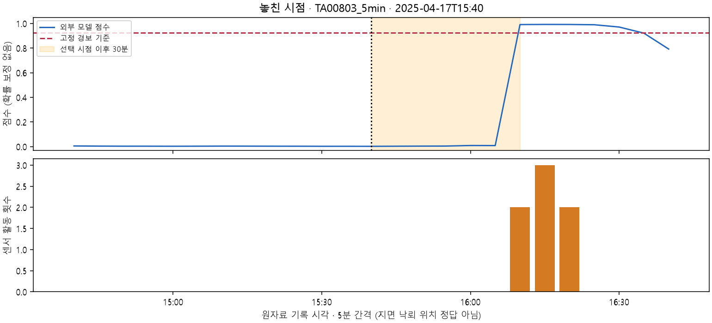
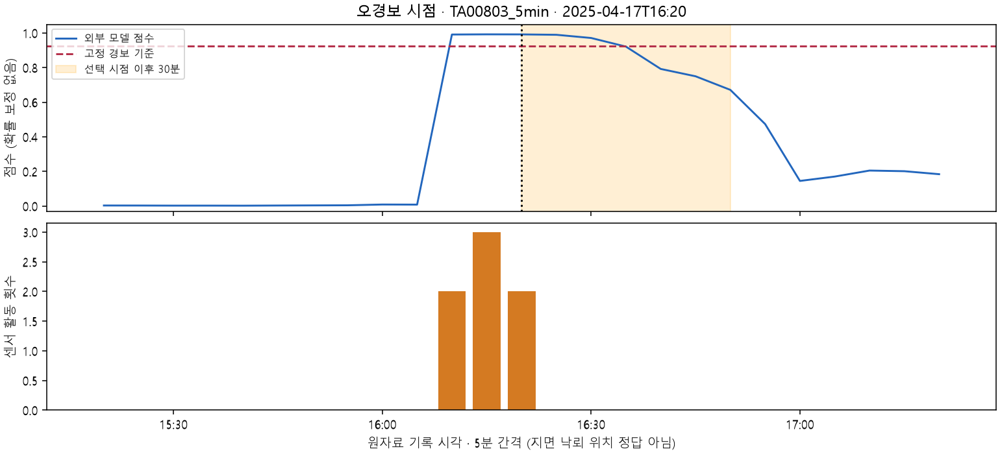

외부 실측 자료로 다음 30분의 센서 활동 예측
실제 관측 자료 · 기존 10개 센서 LSTM과 별도 실험카메룬 CIRAD/TAHMO 관측소의 ATMOS41 기록을 사용합니다. 정답은 센서의 낙뢰 활동 기록이며, 지면 낙뢰(CG)의 발생 위치·시각을 독립적으로 확인한 자료가 아닙니다. 한국 장비 검증 및 실제 보호 제어는 하지 않았습니다. 점수는 보정된 실제 발생 확률이 아닙니다.
무엇을 입력하고 예측했나
기압·기온·습도·풍속·돌풍·강수·일사량·과거 낙뢰 활동의 8개 관측 → 최근 150분(30개 기록)의 106개 특징 → HistGradientBoosting → 다음 30분(6개 기록)의 활동 유무.
TA00804·TA00805의 2025-02-17 이전 기록으로 학습하고, 그 이후 2025-04-13 이전 기록으로 모델과 기준을 선택했습니다. 다른 5곳의 2025-04-13 이후 기간에서 평가했습니다. 아래 결과는 기존 시험 자료의 재현 확인이며 새로운 독립 시험은 아닙니다. 모델·경보 기준을 재조정하지 않았습니다.
고정 경보 기준: 0.923744. 표의 단위는 겹치는 5분 간격 예측 창이며 독립적인 낙뢰 건수가 아닙니다.
실제 기록과 비교한 평가
재현율은 활동이 이어진 창을 얼마나 잡았는지, 정밀도는 경보한 창 중 실제 활동이 뒤따른 비율입니다. 음성 창 오경보율은 활동이 없던 창 중 경보한 비율이며, 전체 경보 중 오경보 비율과 다릅니다.
핵심 한계: 이전 150분 동안 활동이 없었던 조건에서 재현율은 1.16%입니다. 첫 활동을 미리 경고하는 능력은 약하며, 전체 결과만으로 첫 낙뢰 예측에 성공했다고 말할 수 없습니다.
150분 무감지 뒤 시작된 활동 구간의 첫 기록을 별도로 평가하면 126개 중 5개를 직전 30분 안에 경보했습니다. 이는 검증된 첫 지면 낙뢰 건수가 아닙니다. 선행시간은 5분 기록 시각 차이이며 정확한 방전 시각·통신 지연을 반영하지 않습니다.
성공·실패 사례 비교
주황 구간은 선택 시점 이후 30분, 아래 막대는 실제 센서 활동 기록입니다. 선택 시점 자체의 활동은 미래 정답에서 제외합니다. 성공 시점에서도 이미 활동이 시작돼 있을 수 있으므로 첫 활동의 사전 예측 성공과는 다릅니다. 각 유형에서 관측소 파일 순서상 처음 발견한 시점을 보여줍니다. 대표성 있는 무작위 사례나 최고 성능 사례는 아닙니다. 감지 기록의 구름/지면 구분과 정확한 분 단위 시각은 확인되지 않았습니다.
경보 성공 시점
선택 시점 2025-04-17T16:10 · 점수 0.9911 · 다음 30분 활동 정답 1 · 이전 150분 무감지: 아니오

놓친 시점
선택 시점 2025-04-17T15:40 · 점수 0.0023 · 다음 30분 활동 정답 1 · 이전 150분 무감지: 예

오경보 시점
선택 시점 2025-04-17T16:20 · 점수 0.9918 · 다음 30분 활동 정답 0 · 이전 150분 무감지: 아니오

자료 범위와 검증
| 시험 관측소 | 사용한 예측 시각 범위 | 창 수 |
|---|
| TA00803_5min | 2025-04-13T02:25 ~ 2025-06-05T14:50 | 14,698 |
| TA00817_5min | 2025-04-13T02:25 ~ 2025-06-05T17:55 | 15,176 |
| TA00818_5min | 2025-04-13T02:25 ~ 2025-06-05T16:50 | 14,891 |
| TA00819_5min | 2025-04-13T02:25 ~ 2025-06-05T17:55 | 15,145 |
| TA00820_5min | 2025-04-13T02:25 ~ 2025-06-05T17:50 | 14,615 |
원자료 SHA256, 기록 시각, 미래 정답, 무감지 조건, 저장 모델을 다시 실행한 점수와 평가표의 일치를 확인했습니다.
원자료 CIRAD DOI · CC BY 4.0 · 저자·자료명·가공 내역 · 방법 검토에 참고한 Mostajabi 등 연구 (해당 논문의 모델·성능을 재현했다는 의미는 아닙니다.)
평가·검증 근거 JSON · 사례 그래프 수치 JSON · 실측 평가 발표 대본